Jacob Farlow
Software Engineer in the Greater Boston Area
Featured project: JF Nature
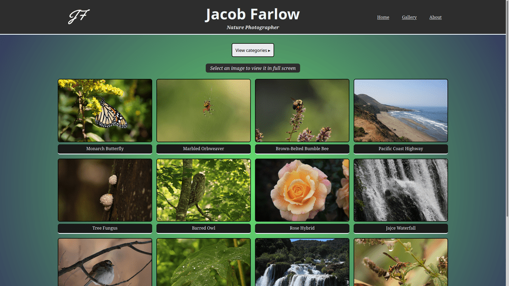
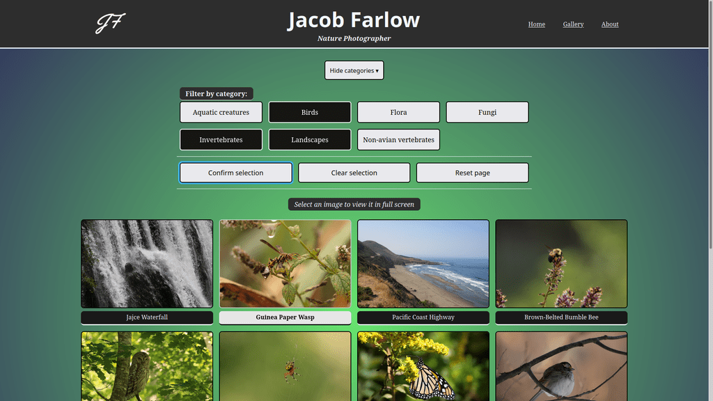
 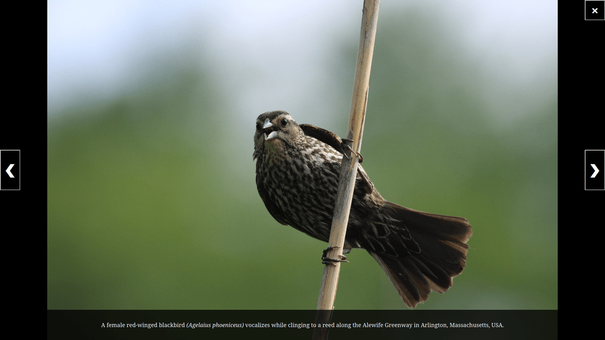
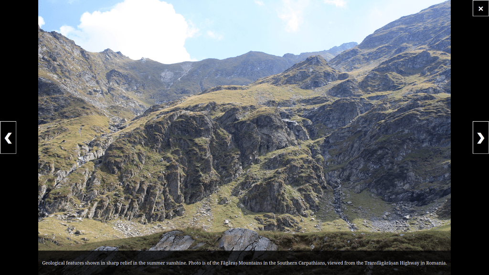
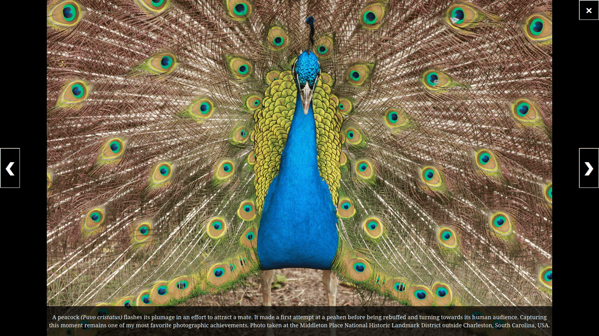
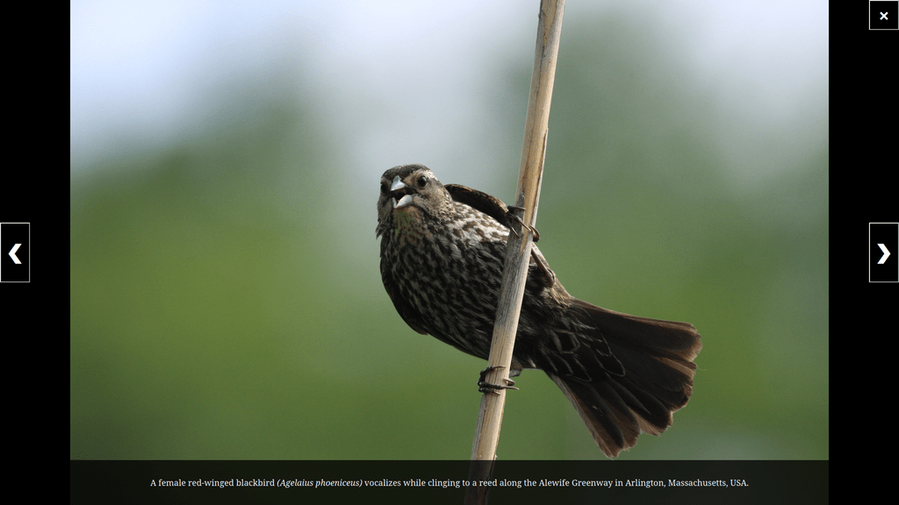
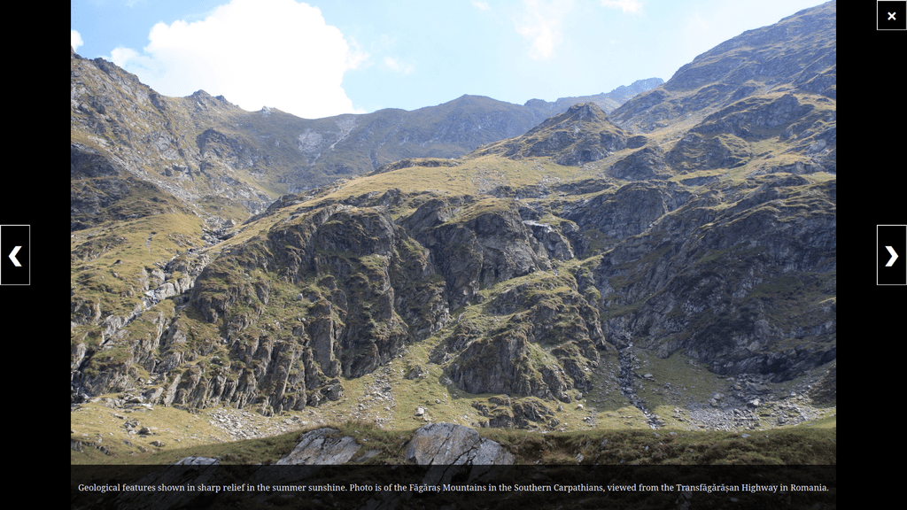
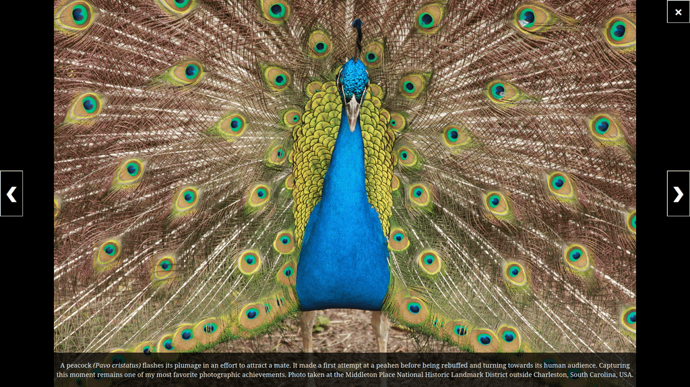
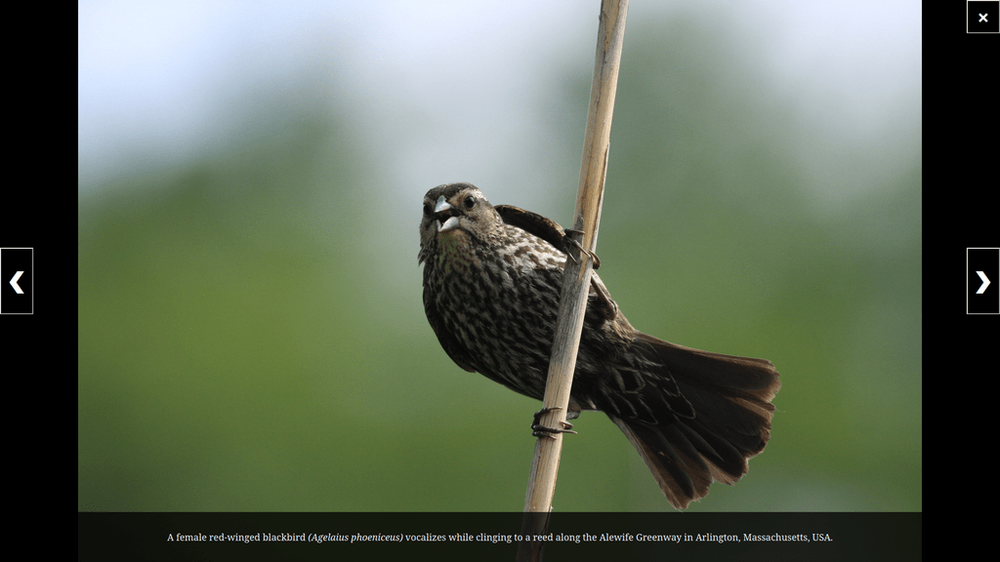
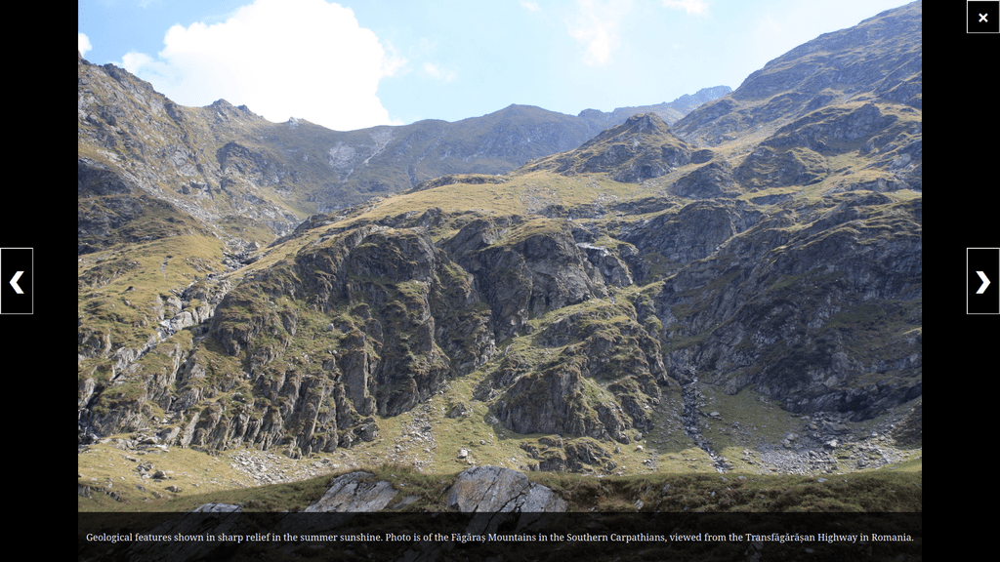
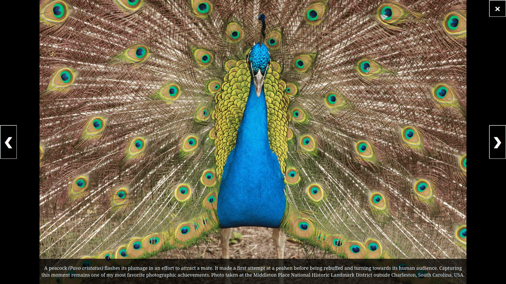
This project is a superb blend of the two facets of myself: nature photographer and software engineer. I opted to build this photography portfolio from the ground up in order to explore the Next.js framework and leverage its in-built support for serverless functions. Whether you're evaluating the underlying code or the quality of the photography, I hope you'll find it a pleasant experience! Check it out!
Tech leveraged:


Cloudinary API
Next.js
TypeScript
Vercel
Have a gander at some other fun things I've explored by heading over to my projects page.